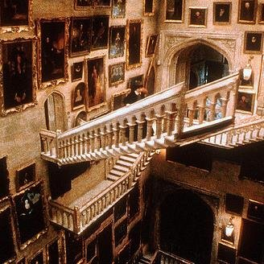
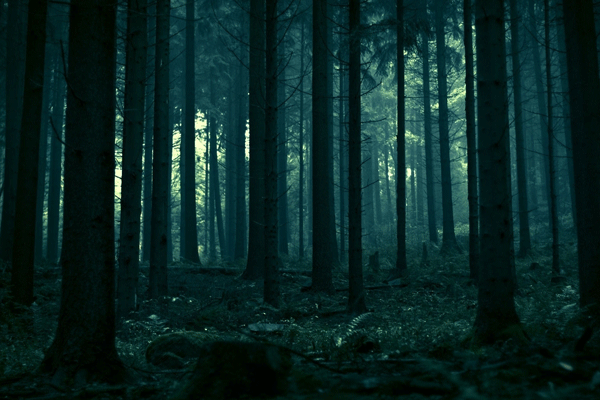
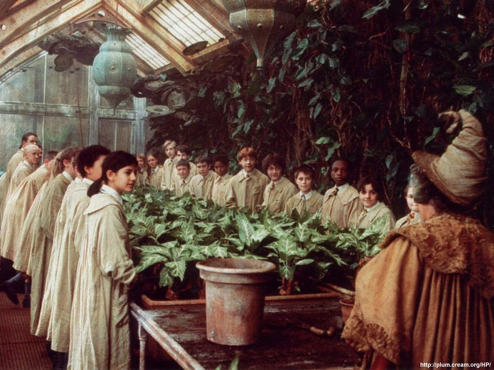
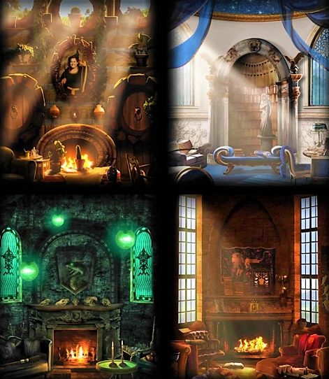

Historia de Hogwarts
El Colegio Hogwarts de Magia y Hechicería es una escuela de magia perteneciente al universo de la saga de libros de Harry Potter. Hogwarts es una escuela a la cual asisten jóvenes magos para desarrollar sus habilidades mágicas. El edificio, situado en las colinas de Escocia, es visto como un antiguo edificio en ruinas con un cartel que dice "cuidado, ruinas peligrosas", por las personas ajenas a poderes mágicos (más comúnmente conocidos como muggles).

Tiene siete plantas, varias torres, escaleras que cambian de posición a su antojo y extensos terrenos que contienen un lago, un bosque, llamado El Bosque Prohibido, y varios invernaderos con fines botánicos.
  
Además de sus numerosas aulas en las que se imparten las clases de Transformaciones, Pociones, Encantamientos, Historia de la Magia, Defensa Contra las Artes Oscuras, Astronomía, Herbología y Vuelo, entre otras, el castillo posee lugares con fines diferentes.
Ejemplos son el Gran Comedor (donde se celebran enormes banquetes en días especiales y que posee un techo mágico el cual parece ser el cielo y presenta el tiempo atmosférico del momento), las salas comunes, una gran biblioteca, la misteriosa Sala de los Menesteres o la legendaria Cámara Secreta, donde el famoso mago Harry Potter derrotó al mago tenebroso lord Voldemort por segunda vez y mató un basilisco usando la espada de Gryffindor, estando apenas en segundo año.
